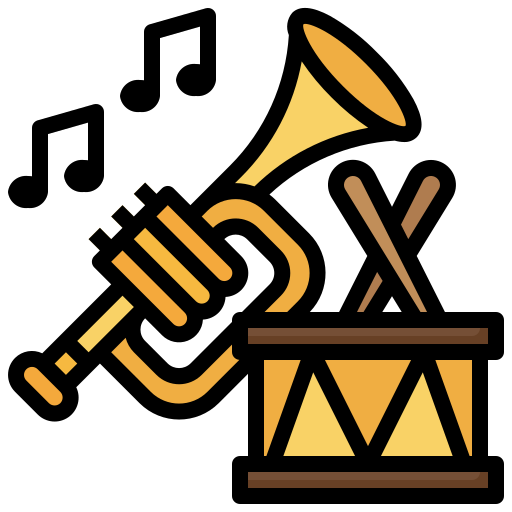

 El efecto de la música en el desarrollo del aprendizaje del hombre
09/11/21
La música como herramienta para un mejor desarrollo integral en los niños
La música es uno de los artes más bellos que le permiten al hombre liberar y expresar sus emociones. Cuando éste arte es presentado a los niños, comienzan a desarrollar ciertas habilidades que no hubieran desarrollado si no hubiera sido por la música. Dichas habilidades les serán de gran utilidad en su proceso de crecimiento, para tener una mayor autoconciencia de ellos mismos y de su propósito en la vida. En este artículo exploraremos cuales son esas habilidades que brinda la musica en los niños que les sirve como herramienta en su proceso de crecimiento.
 Aportaciones de la música al desarrollo de los niños
Aportaciones de la música al desarrollo de los niños Sitios WEB relacionados al tema
Sitios WEB relacionados al tema